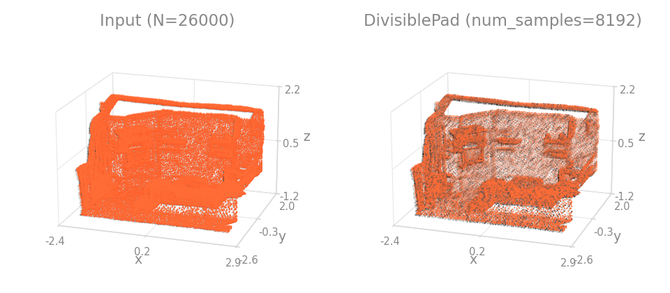
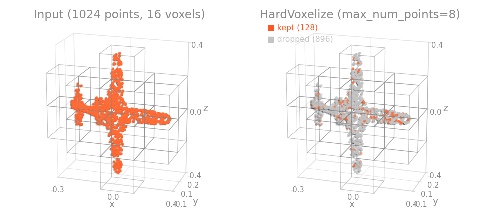
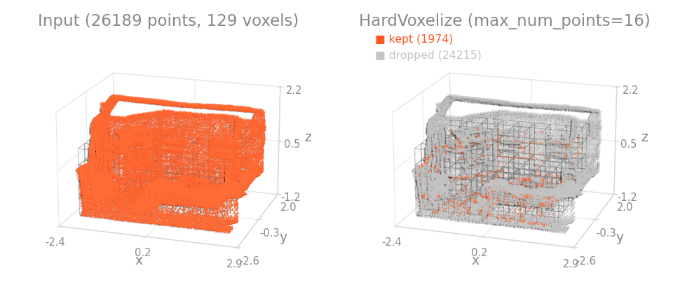
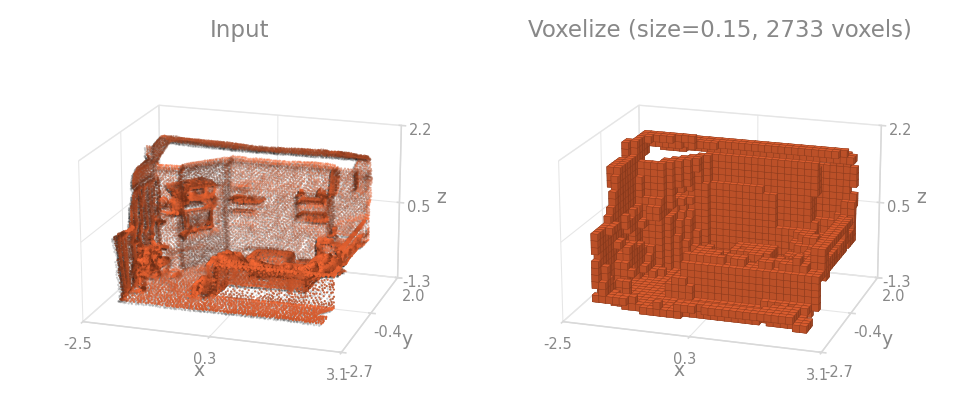

voxelization
Transforms that voxelize the points or pad them to a voxel grid.
Classes:
-
DivisiblePad–Pad per-point tensors so each batch is divisible by
num_samples. -
HardVoxelize–Hard-voxelize a single scene into the per-voxel point stack consumed by voxel detectors.
-
Voxelize–Voxelize a point cloud by grid-binning and per-voxel reduction.
module-attribute
¶
Allowed values for Voxelize.method (voxel-id hashing scheme).
module-attribute
¶
Allowed values for Voxelize.reduce (per-key per-voxel reduction).
module-attribute
¶
Allowed values for Voxelize.pos_reduce (per-voxel reduction for positions; "grid" keeps integer voxel coords).
DivisiblePad(
num_samples: int,
pad_fill: PadFill = "cycle",
ref_key: str = POS,
batch_key: str = BATCH,
seed: Optional[int] = None,
dst_inverse_key: Optional[str] = None,
allow_missing_keys: bool = False,
)
Bases: DictTransform, Randomizable
Pad per-point tensors so each batch is divisible by num_samples.
Thin dict wrapper around divisible_pad; see its docstring for the full
behavior of each pad_fill strategy ("cycle", "replicate", "random").
The tensor at ref_key defines the packed count \(n\) and the device. If a
batch index tensor lives at batch_key, padding is done per-batch; otherwise
a single zero batch is synthesized. Every tensor in the dict whose first dim
equals \(n\) (positions, features, labels, ...) is re-indexed by the same
gather map, so per-point correspondence is preserved.
When dst_inverse_key is set, the transform also records a source-to-padded
index map under that dict key: a 1-D long tensor of length \(n\) with values
in \([0, n_\text{padded})\) giving the canonical padded row for each source
row. If the key already holds a prior inverse map (from an earlier
invertible transform), the new map composes with it via gather, so the
stored tensor always maps from the outermost source space to the current
predictor space. Consumers such as SlidingWindowInferer read this key
once and gather predictions back to the source rows.


Parameters:
-
num_samples(int) –Target chunk size \(k\) for divisibility.
-
pad_fill(PadFill, default:'cycle') –Fill strategy passed through to
divisible_pad. -
ref_key(str, default:POS) –Key whose tensor defines \(n\) and the device.
-
batch_key(str, default:BATCH) –Key for an optional batch index tensor. When present in the data, padding runs per-batch; otherwise a single zero batch is synthesized for the whole scene.
-
seed(Optional[int], default:None) –Seed for the random padding (only used when
pad_fill="random");Nonedraws from the global generator (seeRandomizable). -
dst_inverse_key(Optional[str], default:None) –Key for the source-to-padded row map (see the module docs on sampling keys); composes with any prior value at the same key.
None(the default) disables it. -
allow_missing_keys(bool, default:False) –If
True, return the data unchanged whenref_keyis missing instead of raising.
Example
HardVoxelize(
pos_key: str,
voxel_size: Sequence[float],
point_cloud_range: Sequence[float],
max_num_points: int,
max_num_voxels: int,
feature_key: Optional[str] = None,
dst_voxel_key: str = VOXEL,
dst_pos_voxel_key: str = POS_VOXEL,
dst_num_points_key: str = VOXEL_NUM_POINTS,
allow_missing_keys: bool = False,
)
Bases: DictTransform
Hard-voxelize a single scene into the per-voxel point stack consumed by voxel detectors.
Moves the transform_points_to_voxels step of voxel detectors (PointPillars, SECOND) out of the
model and into the data pipeline, mirroring how BuildOctree produces an octree for OctFormer.
The model then receives already-voxelized input and focuses on the network math.
Reads pos_key (and optionally feature_key), runs
hard_voxelize on the single sample (the
batch index is all zeros), and adds three keys while keeping pos / x:
dst_voxel_key: the per-voxel point stack.dst_pos_voxel_key: integer voxel grid indices \((z, y, x)\) (the single-sample batch column is dropped; the per-voxel scene index is synthesized at collation).dst_num_points_key: the per-voxel point counts.


Parameters:
-
pos_key(str) –Key holding the point positions \((N, 3)\).
-
voxel_size(Sequence[float]) –Voxel size \((v_x, v_y, v_z)\).
-
point_cloud_range(Sequence[float]) –Range \((x_\min, y_\min, z_\min, x_\max, y_\max, z_\max)\).
-
max_num_points(int) –Maximum number of points kept per voxel.
-
max_num_voxels(int) –Maximum number of voxels kept per scene.
-
feature_key(Optional[str], default:None) –Optional key holding extra point features \((N, C)\) concatenated after \(xyz\).
-
dst_voxel_key(str, default:VOXEL) –Output key for the per-voxel point stack.
-
dst_pos_voxel_key(str, default:POS_VOXEL) –Output key for the integer voxel grid indices.
-
dst_num_points_key(str, default:VOXEL_NUM_POINTS) –Output key for the per-voxel point counts.
-
allow_missing_keys(bool, default:False) –Unused (
pos_keyis always required); kept for interface parity.
Shape
dst_voxel_key: \((V, \text{max\_num\_points}, 3 + C)\).dst_pos_voxel_key: \((V, 3)\) with columns \((z, y, x)\).dst_num_points_key: \((V,)\).
Example
import torch
import torch_pointcloud.transforms as T
data = {"pos": torch.rand(1000, 3) * 50.0, "x": torch.rand(1000, 1)}
transform = T.HardVoxelize(
pos_key="pos",
feature_key="x",
voxel_size=(0.16, 0.16, 4.0),
point_cloud_range=(0.0, -39.68, -3.0, 69.12, 39.68, 1.0),
max_num_points=32,
max_num_voxels=40000,
)
data = transform(data)
print(data["voxel"].shape, data["pos_voxel"].shape, data["voxel_num_points"].shape)
Voxelize(
pos_key: str,
pos_reduce: VoxelPosReduce,
size: float,
method: VoxelMethod = "grid",
reduce: Optional[ValueCollection[VoxelReduce]] = None,
keys: Optional[KeyCollection] = None,
dst_inverse_key: Optional[str] = None,
dst_pos_grid_key: Optional[str] = None,
random_first: bool = False,
seed: Optional[int] = None,
allow_missing_keys: bool = False,
)
Bases: DictTransform, Randomizable
Voxelize a point cloud by grid-binning and per-voxel reduction.
Sub-samples a point cloud to one representative point per occupied voxel, and optionally records a source-to-voxel index map for full-resolution back-projection.
Operates on a single sample (pre-collate). With dst_inverse_key set, the stored
tensor has shape \((N_\text{full},)\) with values in \([0, N_\text{voxel})\):
for each original point \(i\), the voxel it belongs to. Downstream code can
recover full-resolution predictions with preds_full = preds_voxel[inverse].
If the key already holds a prior inverse map (e.g. from an earlier invertible transform), the new map composes with it via gather, so the stored tensor always maps from the outermost source space to the current predictor space.


Parameters:
-
pos_key(str) –Key holding the positions to sub-sample.
-
pos_reduce(VoxelPosReduce) –How to reduce positions per voxel (
mean/min/max/sum/first/grid). -
size(float) –Voxel edge length in the same units as the positions. Must be positive.
-
method(VoxelMethod, default:'grid') –How voxel ids are computed, which fixes the output voxel order:
grid(the default) uses the linear grid index,fnvan FNV-1a hash of the grid coordinates, as hash-based reference pipelines do. -
reduce(Optional[ValueCollection[VoxelReduce]], default:None) –Per-key reduction for
keys.None(the default) resolves per key tomeanfor floating-point tensors andfirstfor integer tensors (e.g.segment). Integer keys keep their dtype: non-firstreductions compute in float and cast back. Thefirstrepresentative is the first point of each voxel in input order, deterministic across devices (unlessrandom_first=True). -
keys(Optional[KeyCollection], default:None) –Additional per-point keys to sub-sample (e.g.
color,segment). -
dst_inverse_key(Optional[str], default:None) –Key for the source-to-voxel row map (see the module docs on sampling keys); composes with any prior value at the same key.
None(the default) disables it. -
dst_pos_grid_key(Optional[str], default:None) –When set, also store the integer voxel-grid coordinates under this key. Useful when a model needs both real-valued positions (e.g. for rotary position embedding) and integer grid coordinates (for serialization / sparse-conv stems); with
pos_reduce="grid"it holds the same grid aspos_key. -
random_first(bool, default:False) –If
True, the per-voxel representative used byreduce="first"(and thepos/grid_posderivations) is chosen randomly within each voxel on every call. Per-voxel random sampling is a meaningful training augmentation; leaveFalse(default) for deterministic validation. -
seed(Optional[int], default:None) –Seed for the random voxel representative (
random_first);Nonedraws from the global generator (seeRandomizable). -
allow_missing_keys(bool, default:False) –If
True, return the data unchanged whenpos_keyis missing and skip absentkeys.
Raises:
-
ValueError–If
sizeis not positive, orpos_reduce/method/ anyreduceentry is not one of its allowed values.
divisible_pad(
batch: Tensor,
k: int,
mode: PadMode = "all",
pad_fill: PadFill = "cycle",
return_inverse: bool = False,
generator: Optional[Generator] = None,
) -> Union[
Tuple[Tensor, Tensor], Tuple[Tensor, Tensor, Tensor]
]
Pad the batch indices of a tensor to make them divisible by a given integer.
Consider a batch with three samples of sizes 2, 7, and 4, and k=4:
Mode controls which batches get padded (· = padded slot):
mode="all" [0 0 · · | 1 1 1 1 1 1 1 · | 2 2 2 2]
2→4 7→8 4 (ok)
mode="below" [0 0 · · | 1 1 1 1 1 1 1 | 2 2 2 2]
2→4 ↑ 7 (≥k) 4 (ok)
only <k
mode="above" [0 0 | 1 1 1 1 1 1 1 · | 2 2 2 2]
2 7→8 ↑ 4 (ok)
(<k) only ≥k
Pad fill controls how padded slots are filled. Given batch 1
with 7 elements (A B C D E F G) and k=4:
Original patches: [A B C D] [E F G ·]
patch₀ patch₁ (incomplete)
pad_fill="cycle" → [A B C D] [E F G A]
Cycles from the start ↑ wraps to A
pad_fill="replicate" → [A B C D] [E F G D]
Copies from previous patch ↑ same position as D
at same offset
pad_fill="random" → [A B C D] [E F G ?]
Random sample from the batch ↑ uniform over {A..G}
When batch_size < k there is no previous patch, so "replicate"
falls back to "cycle":
batch 0 (size 2, k=4): [A B · ·]
pad_fill="cycle" → [A B A B]
pad_fill="replicate" → [A B A B] (same, no prior patch)
pad_fill="random" → [A B ? ?]
Parameters:
-
batch(Tensor) –The batch indices of the tensor. Rows of the same batch must be contiguous (grouped, as produced by packed-batch collation); the batch values themselves may be non-consecutive. Interleaved orderings (e.g.
[0, 1, 0, 1]) are not supported and silently mix samples. -
k(int) –The integer to make the batch indices divisible by.
-
mode(PadMode, default:'all') –The mode to use for padding. -
"below": Pad only batches with fewer thankelements. -"above": Pad only batches withkor more elements. -"all": Pad all batches to be divisible byk. -
pad_fill(PadFill, default:'cycle') –Strategy for filling padding slots. -
"cycle": Cycle through original indices from the start of the batch (indices[0], indices[1], ...). -"replicate": Copy indices from the previous patch at the same relative offset. When the last group ofkelements is incomplete, the missing positions are filled with the corresponding positions from the preceding full group. Falls back to"cycle"when there is no preceding group (i.e. the batch has fewer thankelements). -"random": Sample padded indices uniformly with replacement from within the batch's original indices. Consumesgeneratorif given. -
return_inverse(bool, default:False) –Whether to return the inverse of the padded indices.
-
generator(Optional[Generator], default:None) –Optional
torch.Generatorfor reproducibility (used only bypad_fill="random").
Returns:
-
Union[Tuple[Tensor, Tensor], Tuple[Tensor, Tensor, Tensor]]–Returns a tuple of
(indices, padded_batch). -
Union[Tuple[Tensor, Tensor], Tuple[Tensor, Tensor, Tensor]]–If
return_inverseisTrue, returns(indices, inverse_indices, padded_batch).